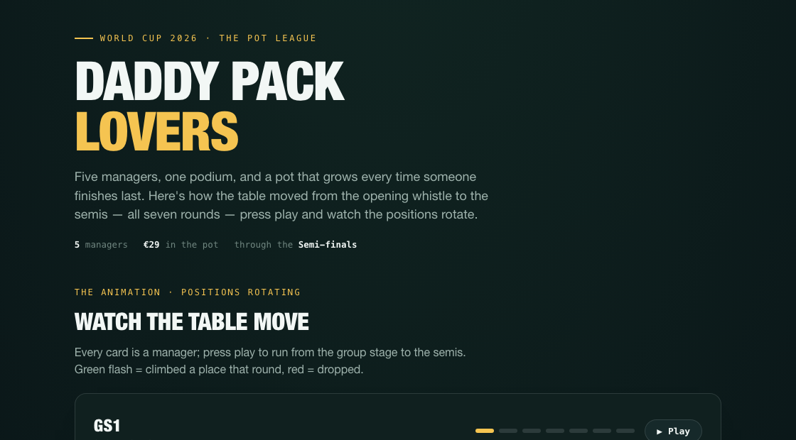
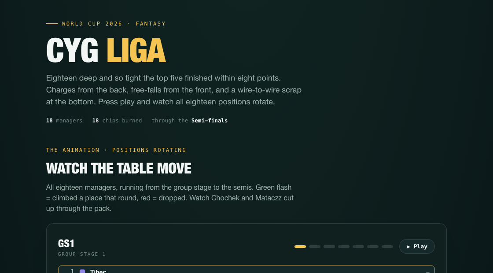

World Cup 2026 · Fantasy
How the tables moved from the opening whistle to the Final — press play on each to watch the positions rotate, then explore the bump charts, standings and season awards.

A five-way sprint won by alekriquelme, a spoon that changed hands on the last kick, and €39 in the pot.
Open the recap →
Eighteen deep, Hulje champion by three points after a 106-point final-day charge — a line on every manager, and 89 chips burned.
Open the recap →